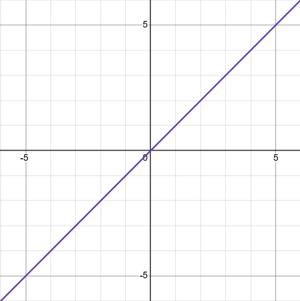

Conceitualização
Funções Lineares são aquelas cujo gráfico é uma linha reta, ou seja, é uma função polinomial de grau zero ou 1.
Também conhecida como funções afim, tem a fórmula f(x)=ax+b, onde a e b são constantes.
O gráfico de tal função é uma linha reta, onde a é o coeficinete angular e b é o coeficiente linear.
Se a>0, a função é crescente:

Se a<0, a função é decrescente:

Nesse contexto, uma função constante também é linear, sendo um polinômio de grau 0 e, gráficamente, uma reta horizontal

Sabendo o conceito, vamos nos aprofundar nos cáculos.
Determinação dos Coeficientes Angular e Linear
Para Determinar o coeficiente angular, usamos uma razão entre um ponto e outro.
A fórmula se dá por: a=y2-y1⁄x2-x1
Exemplo:

Dado o gráfico na imagem, podemos perceber os pontos (0,4), (1,7) e (2,10).
Usando a fórmula, podemos encontrar o coeficiente angular.
Utilizando dos pontos (0,4) e (1,7), encontramos o seguinte:
a= 7-4⁄1-0 = 3⁄1 = 3
Portanto, o coeficiente angular é igual a 3
Mas e o coeficiente linear?